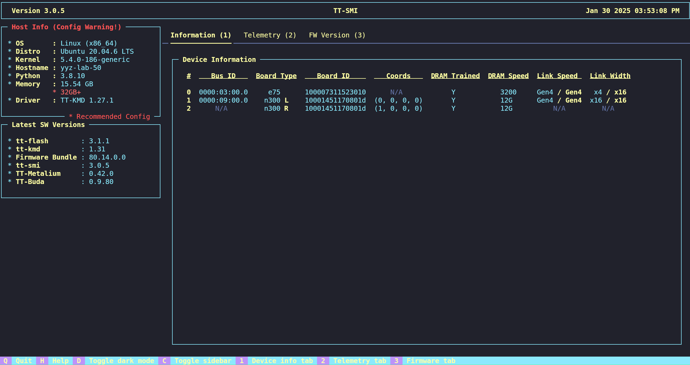

Starting Guide
Welcome to Tenstorrent! This guide will walk you through setting up your Tensix Processor(s) and installing necessary software.
Table of Contents
1. Prerequisites
Before you begin, ensure you have the following:
A compatible host machine with minimum hardware and OS requirements as specified by each product’s minimum system requirements:
Network access to download software packages.
Administrator privileges on the host machine.
NOTE: The recommended OS for all Tenstorrent software is Ubuntu 22.04 LTS (Jammy Jellyfish). Each SDK may support newer distributions of Ubuntu; however, compatibility should be considered experimental at this time.
NOTE: Software support for Grayskull has been discontinued. The last supported versions of Tenstorrent’s software for Grayskull are as follows:
TT-Firmware:
fw_pack-80.15.0.0.fwbundleTT-KMD:
ttkmd_1.31TT-Buda:
v0.19.3TT-Metalium:
v0.55
TT-QuietBox BIOS Requirement
The BIOS for the host motherboard is configured at the factory with the setting for PCIe AER Reporting Mechanism set to OS First. Tenstorrent’s TT-SMI software will fail if this setting is not configured properly. You should not have to change this setting when first setting up your TT-QuietBox.
If for whatever reason the BIOS needs to be updated or is reset, this setting must be configured again to ensure TT-SMI is able to function. It is located in the BIOS here:
Chipset -> AMD CBS -> NBIO Common Options -> NBIO RAS Common Options -> PCIe AER Reporting Mechanism
2. Unboxing and Hardware Setup
Unpack the hardware and check all components against the provided list.
Install the hardware following the hardware installation manual and safety guidelines by product:
Secure the hardware in place, ensuring it is firmly seated and all connections are stable.
3. Software Installation
To interact with the Tensix Processor(s), you’ll need to install the system-level dependencies on your host machine.
Quick Installation
Tenstorrent provides a bash script, tt-installer, for fast and easy setup of our software stack. The installer supports Ubuntu, Fedora, and Debian. To use it, paste the following into your terminal:
/bin/bash -c "$(curl -fsSL https://raw.githubusercontent.com/tenstorrent/tt-installer/refs/heads/main/install.sh)"
By default, TT-Metalium is installed as a container using Podman. This containerized environment is appropriate for most users as explained here, but advanced users and developers may wish to install Metalium natively on the host system or use Docker instead of Podman. To skip installing Podman and Metalium, answer “n” when asked. After the installation is completed, proceed to TT-NN / TT-Metalium Installation for manual installation instructions.
For more information about tt-installer, please see the repository. If you would prefer to install the software stack manually, proceed to Manual Installation.
Manual Installation
Important!
This Starting Guide will reference each software utility where the latest version is available. However, each SDK will have its own compatibility matrix associated with each release. It is strongly recommended to consult each SDK’s release compatibility matrix to ensure you are installing the correct versions of the system software packages.
Step 1: Install Software Dependencies
Install git, wget, pip, and DKMS (Dynamic Kernel Module Support) by running the following command in your terminal according to your Linux distribution:
Linux Distro |
Installation Command |
|---|---|
Debian, Ubuntu |
|
Fedora |
|
Enterprise Linux based |
|
*NOTE: Installation on non-Ubuntu distributions should be considered experimental at this time.*
Step 2: Install the Kernel-Mode Driver (TT-KMD)
Install the driver (TT-KMD) by running these commands in the terminal:
git clone https://github.com/tenstorrent/tt-kmd.git
cd tt-kmd
sudo dkms add .
sudo dkms install tenstorrent/1.34
sudo modprobe tenstorrent
Step 3: Device Firmware Update (TT-Flash / TT-Firmware)
The TT-Firmware file needs to be installed using the TT-Flash utility.
Install TT-Flash
To install TT-Flash, run this command in the terminal:
pip install git+https://github.com/tenstorrent/tt-flash.git
*NOTE: If you are not using a Python virtual environment (venv), you may see an error externally-managed-environment when installing via pip. To resolve this, create and/or activate a venv or use a tool like pipx.*
Update Device Firmware
To update Tenstorrent device firmware using TT-Flash, run these commands in the terminal:
wget https://github.com/tenstorrent/tt-firmware/raw/main/fw_pack-18.2.0.0.fwbundle
tt-flash --fw-tar fw_pack-18.2.0.0.fwbundle
If this process worked, reboot the system and go to the next section.
If running that command results in an error that says the firmware is too old, enter the following command:
tt-flash --fw-tar fw_pack-18.2.0.0.fwbundle --force
Then reboot the system.
Step 4: Set Up HugePages
HugePages lets your system allocate dedicated memory to accelerate communication with Tenstorrent devices. Set up HugePages by running these commands in the terminal:
# Install `.deb`
wget https://github.com/tenstorrent/tt-system-tools/releases/download/v1.3.1/tenstorrent-tools_1.3.1_all.deb
sudo dpkg -i tenstorrent-tools_1.3.1_all.deb
# Start Services
sudo systemctl enable --now tenstorrent-hugepages.service
sudo systemctl enable --now 'dev-hugepages\x2d1G.mount'
# System Reboot
sudo reboot
*NOTE: This is a temporary solution for configuring hugepages. If the above fails, please check the latest available release from TT-System-Tools.*
Step 5: (Optional) Multi-Card Configuration (TT-Topology)
NOTE: TT-LoudBox and TT-QuietBox ship with their topology already configured. Use this application only if you have modified or are trying to modify the topology of your Wormhole-based TT-LoudBox or TT-QuietBox. If you are not doing so, skip this step. TT-Topology is provided as-is.
If you are running on a multi-card Wormhole system such as TT-LoudBox or TT-QuietBox, install the Tenstorrent Topology utility (**TT-Topology**) and configure a mesh topology by running these commands in the terminal:
pip install git+https://github.com/tenstorrent/tt-topology
tt-topology -l mesh
Step 6: Install the System Management Interface (TT-SMI)
Install the Tenstorrent Software Management Interface (TT-SMI) by entering this command in the terminal:
pip install git+https://github.com/tenstorrent/tt-smi
Step 7: Verify System Configuration and Test TT-SMI
Once your hardware and system software are installed, verify that your system has been configured properly by running the tt-smi utility.
You should see an interface like this one:

Within TT-SMI, you can see device information, telemetry, and firmware. If TT-SMI runs without errors, congratulations! You’re ready to use your Tenstorrent device. Take note of any host compatibility warnings.
If you are using a TT-QuietBox and have reboot issues while using TT-SMI, and you’ve recently updated/reset the BIOS, you will need to update a setting. In the BIOS, find the following setting:
Advanced -> AMD CBS -> NBIO Common Options -> PCIe Aer Reporting Mechanism
And change the setting to OS First.
Installation
Tenstorrent provides open-source software stacks for developing on Tensix Processors:
TT-Metalium/TT-NN to build your own kernels and models
TT-Forge/TT-MLIR to create, compile, and optimize graph operations
Each SDK will have its own system dependency requirements and installation process.
To help you get started, check out the First 5 Things guide - which includes installation steps - for TT-Metalium.
TT-Buda (Deprecated)
Tenstorrent has discontinued development and support for the TT-Buda stack; these links are provided for reference and for developers still using Grayskull® cards.
First 5 Things for TT-Buda
Support & FAQ
For support, forums, and community, visit Tenstorrent’s Discord channel.
For additional support, file any issues through our Customer Success Platform or you can contact us directly at support@tenstorrent.com.